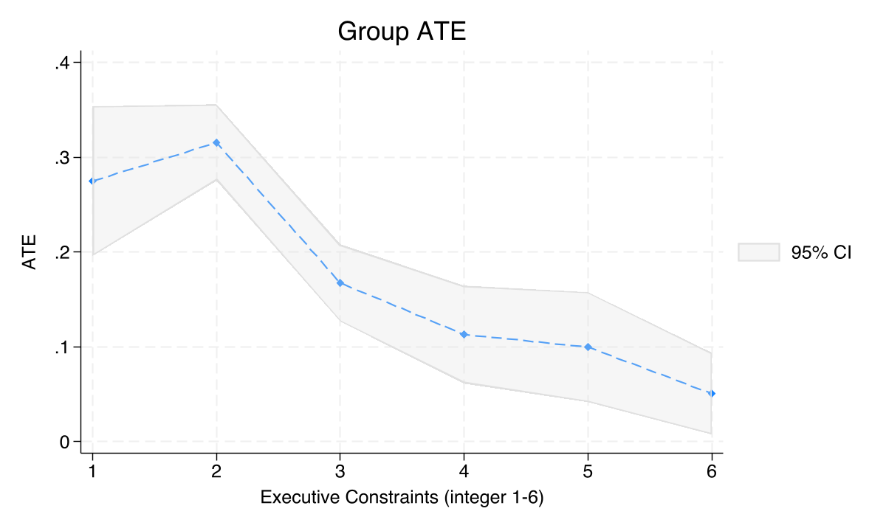
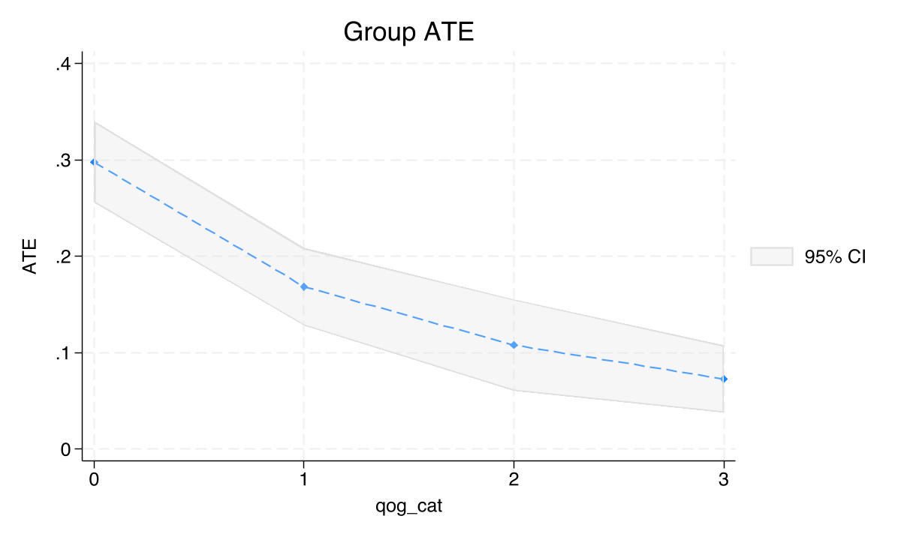
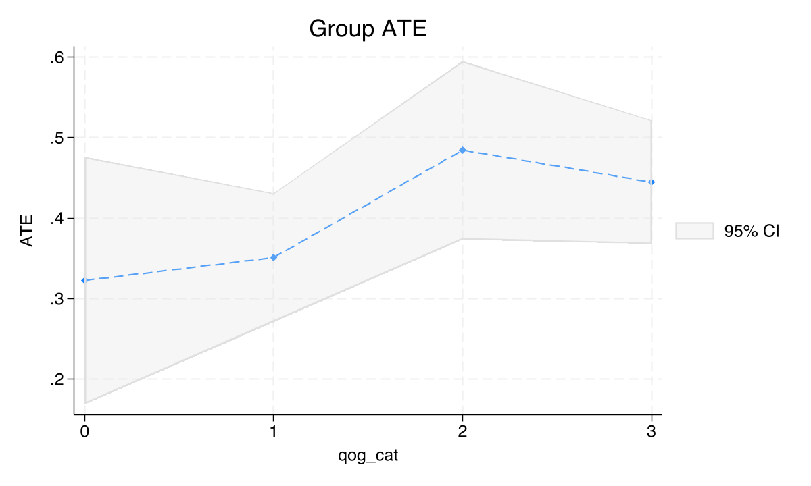
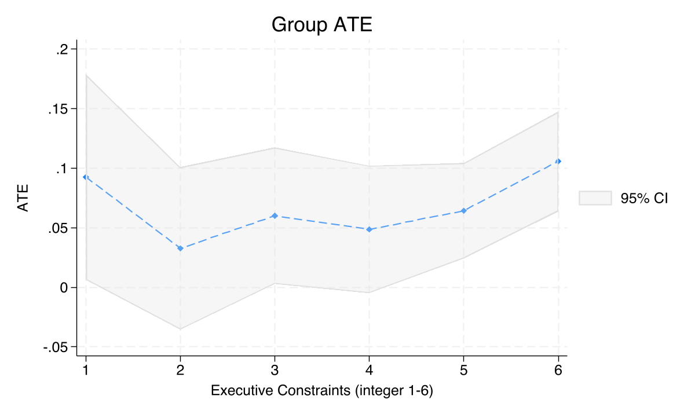
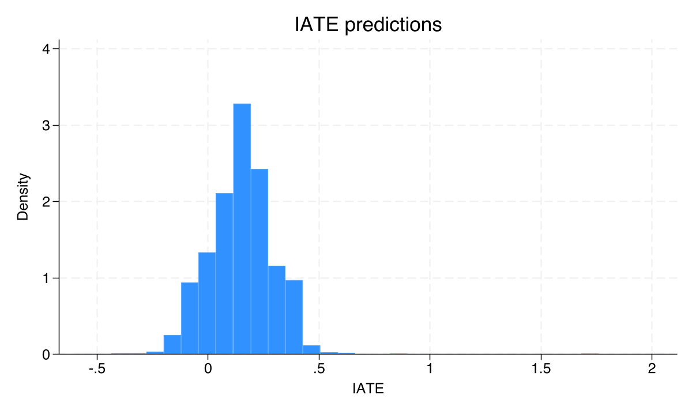
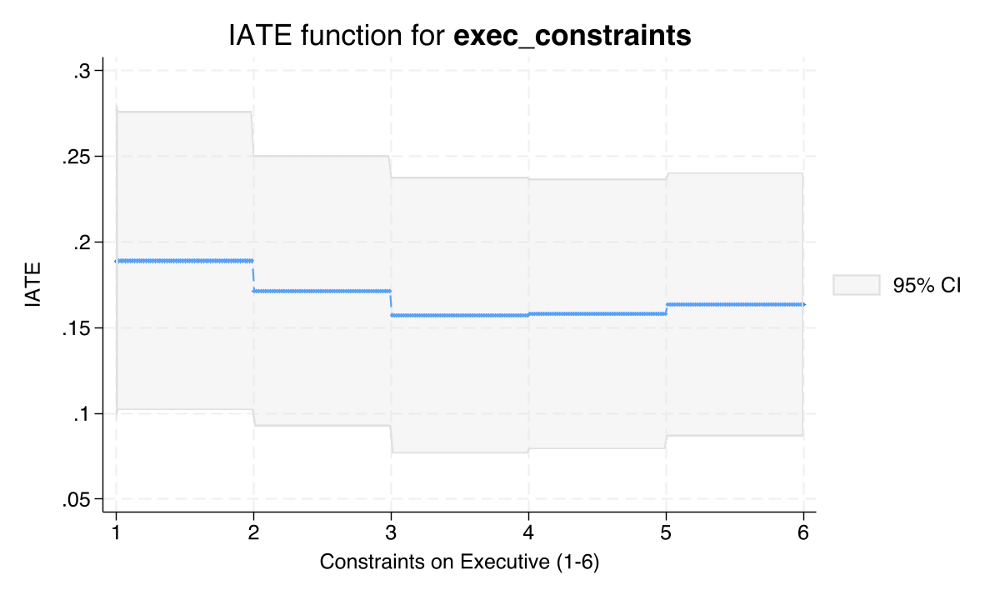

Who does mining help? Heterogeneous treatment effects with Stata 19
Nagoya University (GSID)
June 11, 2026
Act I
The resource curse asks whether mineral wealth raises or wrecks development. Most studies answer with a single average effect.
But Hodler, Lechner & Raschky (2023) showed the answer bends with institutions. For whom does mining pay off — and where does it just bring conflict?

GATEs for the NTL mining effect (1-0) by executive constraints. Effect falls from 0.275 at the weakest constraints to 0.051 at the strongest.
cate: ATE, then GATEs, then per-district effectsAct II
\[\tau(\mathbf{x}) = E\{Y_i(1) - Y_i(0) \mid \mathbf{X}_i = \mathbf{x}\}\]
The CATE is the average effect for districts with covariate profile \(\mathbf{x}\). Where \(\tau(\mathbf{x})\) bends, mining helps some districts more than others.
A single ATE is just \(E\{\tau(\mathbf{X})\}\) — this function averaged over everyone, discarding exactly the heterogeneity we want.
Because the data-generating process is known, every estimate can be scored against its true value — a luxury real data never gives.
Stata’s cate needs a binary treatment, so we subset to two groups at a time and run a generalized random forest on each contrast.
\[y = d\cdot\tau(\mathbf{x}) + g(\mathbf{x},\mathbf{w}) + \epsilon, \qquad d = f(\mathbf{x},\mathbf{w}) + u\]
keep if treatment == 1 | treatment == 0
gen byte treat_1v0 = (treatment == 1)
global catevars exec_constraints quality_of_govt gdp_pc elevation /// moderators
cate aipw (ntl_log $catevars) (treat_1v0), ///
controls(i.country_id i.year) ///
rseed(12345) xfolds(5) omethod(rforest) tmethod(rforest)
categraph gateplot // GATEs by subgroup
estat gatetest // formal heterogeneity test| Contrast | Naive diff | Ground truth |
|---|---|---|
| 1 vs 0 | 0.109 | 0.25 |
| 3 vs 1 | 0.414 | 0.30 |
| 2 vs 1 | 0.099 | 0.05 |
Some confounders push the raw gap above the truth, some below — geography, institutions, and wealth all differ across mining status.
+0.149
AIPW ATE, mining vs none (SE 0.011, \(p<0.001\)); PO gives +0.194 on the same contrast
+0.405
High-vs-low price premium (AIPW 3-1, \(p<0.001\)); medium-vs-low is \(-0.011\), \(p=0.90\)
Objection. Machine-learning the nuisance functions can’t conjure a causal effect from observational data.
Response. Correct. \(\tau(\mathbf{x})\) is identified only under conditional independence given \(\mathbf{X}\) (unconfoundedness) and adequate overlap. The forest just estimates \(g\) and \(f\) flexibly; it can’t rule out an omitted confounder. The 3-vs-2 contrast even failed on overlap — a feature, not a bug, of honest estimation.
Act III
96.90
\(\chi^2(5)\) for GATE equality by executive constraints (\(p<0.001\)) — effects are not homogeneous

GATEs for the NTL mining effect (1-0) by quality-of-government quartiles: 0.298 in the lowest quartile, 0.073 in the highest. \(\chi^2(3)=69.19\), \(p<0.001\).
| Districts | ATE | SE | \(N\) |
|---|---|---|---|
| Weak institutions (exec \(\leq 2\)) | 0.297 | 0.022 | 558 |
| Strong institutions (exec \(\geq 4\)) | 0.092 | 0.016 | 1,526 |
The mining effect is more than three times larger in weakly-governed districts — the same slope, now as a policy-ready contrast.

GATEs for the NTL price effect (3-1) by quality-of-government quartiles. No monotone slope; \(\chi^2(3)=5.81\), \(p=0.121\) — fails to reject equality.

GATEs for the conflict mining effect (1-0) by executive constraints. All groups positive (0.033–0.106) but \(\chi^2(5)=5.00\), \(p=0.416\) — homogeneous.

Distribution of individualized treatment effects \(\hat\tau(\mathbf{x}_i)\) for the NTL mining effect, centered near the 0.15 ATE with substantial spread. estat heterogeneity: \(\chi^2(1)=53.05\), \(p<0.001\).

IATE function for the NTL mining effect as executive constraints rise, all other covariates at reference. The continuous downward trend confirms the GATE bars.